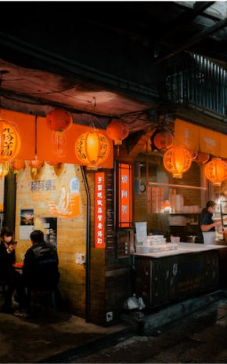
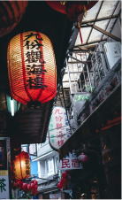
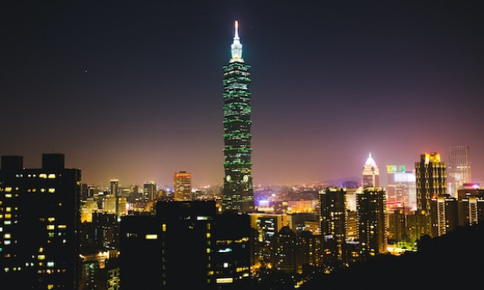
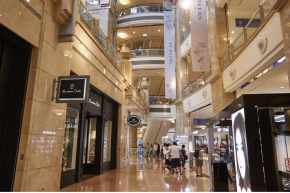
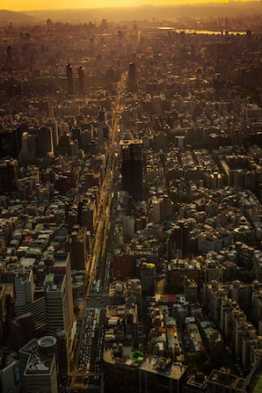
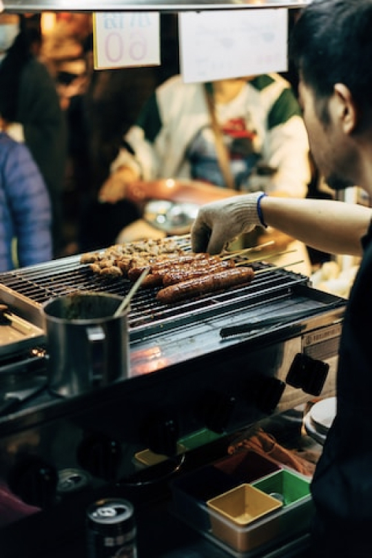
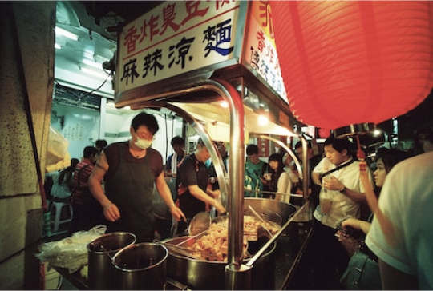
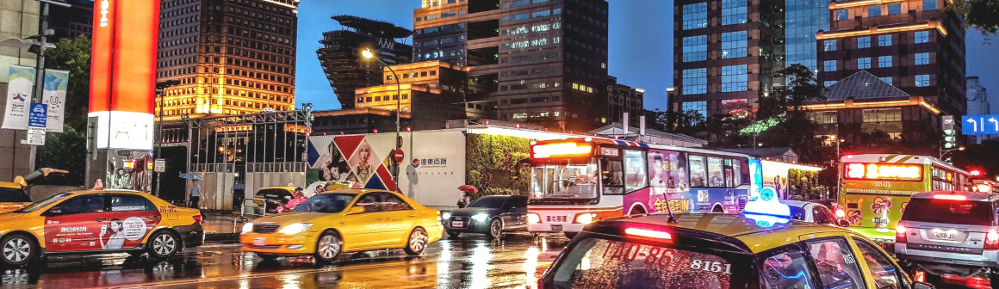

台北市は台湾の中心地です。活気にあふれる街台北ではさまざまな建物、台北を生きる人の美しい風景を見ることができます。
Attraction 観光名所
九份

細い路地の階段に沿って建つ古い館に、提灯が灯るノスタルジックな風景。1989年、映画「非情城市」の舞台になったことをきっかけに再び注目を集めると共に、日本では、九份の町中にある建物が2001年公開の映画「千と千尋の神隠し」に登場する湯婆婆の湯屋を彷彿させるとして話題に。日本統治時代に建てられた古い建物が残ることから、どこか懐かしい雰囲気が漂う町並みは日本人の琴線に触れ、今や台湾で行きたい観光地ナンバーワンとなりました。
|  |  |
おすすめ観光時間は幻想的な夕暮れがねらい目
15:00～19:00
台北101

高さは509.2m、地上101階からなり、名前の由来にもなっている。エレベーターは東芝エレベータ製で、毎分1,010メートル（時速60.6キロメートル）の速さで上昇でき、地上1階から展望台のある89階（地上382.2メートル）まで39秒で到達する。展望台、オフィス、レストラン、ショッピングモールなどが入る台湾を代表するランドマークワー。有名なカウントダウンパーティーをはじめ節目に合わせたライトアップを行っています。
|  |  |
おすすめ観光時間は展望台営業時間帯
11:00～19:00
NightMarket 夜市
台北観光の夜の目玉と言えば、なんと言っても夜市（ナイトマーケット）があげられます。 毎日市内の各所でひらかれ、夕方から夜遅くまで多くの人々で賑わっています。 絶品Ｂ級グルメ・小吃からファッション、ゲームといったお店が集まっています。


Access 交通手段
各地へのアクセスにご利用ください

■MRT 地下鉄：初乗り20元
乗り方は日本の地下鉄とほぼ同じ。改札を通る時には、切符・ICカード共にタッチ。台北MRTは全て各駅停車です。
■バス：初乗り15元
バス停は、ポールが立っているだけ、大通りでは車道の真ん中のバスレーン沿いにあります。乗りたい場合、バスに向かって手を挙げます。乗車して、現金で払う場合は運転手に行先を告げて運賃箱にお金を入れます。
■タクシー：初乗り70元
市内の移動で気軽に使うことが出来ます。MRTなどが運行しない真夜中や早朝の移動にも便利です。新幹線の駅や有名観光地などにはタクシー乗り場が準備されているので、そこから乗りましょう。ホテルならフロントで呼んでもらいます。
■EASYCARD 悠遊カード：販売額100元
現金をチャージして使うことが出来る交通系ICカード。台北旅行の際に手に入れておくと便利です。MRT・バス・台湾鉄路などで使用することができ、切符を買う手間がなく、運賃が割引（MRTは二割引き）になります。